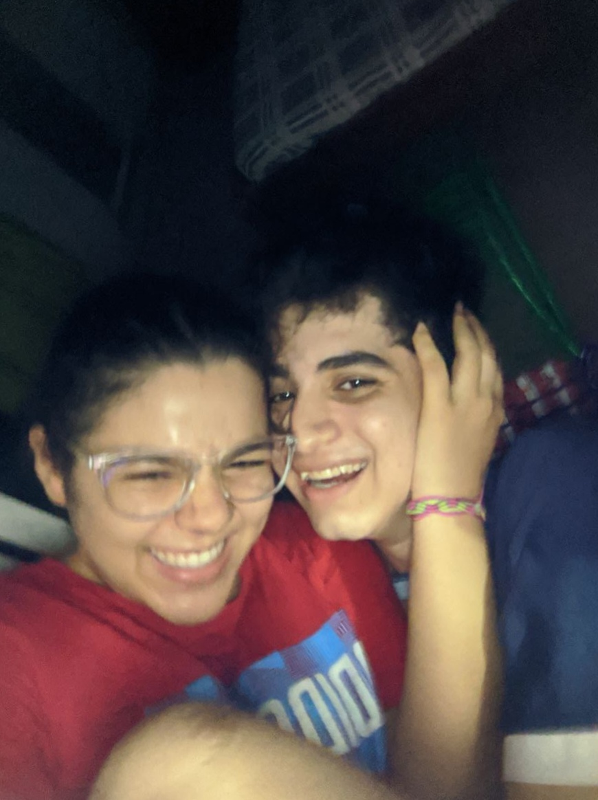

|
|
|
|
|
|---|
|
|
|
|
|
|---|
Un muy bonito amor
Meses de mucho amor y felicidad, con unos cuantos deslices, pero siempre juntos y muy felices, cada dia estando en tu casa pasandola bien contigo, consintiendote, dandote besitos, teniendote en mis brazos
una relación casi que perfecta, solo siendo féliz el uno con el otro, nuestras salidas mas cotidianas eran ir hasta al comercio a pagar deudas de tu mama e incluso así la pasabamos súper bien, que alegria tan inmensa despertar cada
dia solo porque iba a poder verte y estar contigo, incluso recuerdo cuando estabas cumpliendo años y yo iba hacía tu casa con las flores, ese día le dije a mi hermana que me acercara hasta tu casa porque me iba a sentir muy incómodo
en la calle con la gente viendo a un muchaco con unos girasoles mas grandes que sus brazos, de igual forma llegué a tu casa y pude ver tu cara de felicidad al verme con tu regalo y se sintió tan lindo, y lo digo en el sentido de verte tan feliz,
ademas de que tu lenguaje del amor es que te gusta recibir detalles fue muy bonito ver que te dí mucha alegría.
Y nuestra primera cita, una de las mejores que he tenido, exceptuando por el hecho de que estabas un poco mal de la boquita y tambien que ibamos a ir a Orale pero estaba muy lleno, igual la pasamos muy bien comiendo pizza y en especial
lo mejor de esa noche fuiste tu y lo resplandecientemente hermosa que estabas con tu outfit y tu delineado perfecto, y es que o sea, siempre estás bellisima pero ese dia pfff, te pasaste muchísimo, cuando entre a tu casa y te vi, literalmente
me quede sin palabras y te veia demasiadas veces para cerciorarme de que fueras de verdad porque alguien asi de hermosa como tu es simplemente inimaginable.
Juntos podemos cualquier cosa

Ahora llegamos a este momento, diria casi que hasta donde nos encontramos ahora, y me pregunto, ¿Que nos ha pasado?, y me refiero a principalmente que hay tantas cosas que hemos dejado de hacer el uno por el otro
y solo tenemos destellos de ese verdadero sentimiento que nos une; muchas discusiones sin sentido, o directamente no dirigirnos la palabra, en vez de decidir solucionar todo, yo creo que nuestro amor es mas fuerte que cualquier
discusion sin sentido.
Yo estoy completamente seguro de que estoy ahora mismo con la persona con la que quiero pasar toda mi vida, a la que amo y amaré siempre por sobre cualquiera de las cosas, a la mujer mas perfecta y unica
que haya podido existir. Y Carolina Te amo, te amo mucho y se que juntos podemos ser mejores de lo que somos ahora mismo.